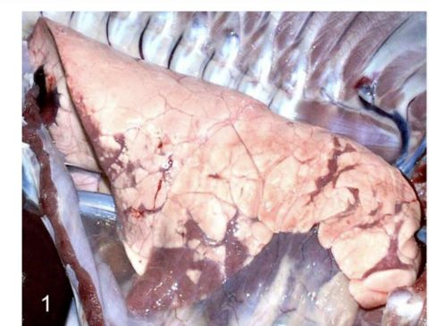

1
大方向與重點摘要
豬流感的大方向
- 這是什麼病
- 由 A 型流感病毒（Influenza A virus, IAV）造成豬的急性呼吸道病：突然發病、發燒、咳嗽、呼吸費力，快速恢復。感染常是亞臨床，與其他病原混合感染（例如豬呼吸道疾病複合症 PRDC）會加重。
- 為什麼重要
- 除了豬場損失，豬在流感生態中扮演「混合容器（mixing vessel）」：人、禽、豬的流感病毒可在豬體內基因重組。人傳豬（反向人畜共通）遠比豬傳人頻繁。台灣也有人類感染 H1N2v 的病例。
- 這章要抓的重點
- 容易混淆
-
- 為什麼流感病毒容易被消毒劑不活化？因為有「封套」；「分段基因」與「重組」是變異來源，不是怕消毒劑的原因。
- 支氣管旁腺體壞死增生不是豬流感的病變；它是上皮壞死脫落、氣道阻塞。
- 豬是「混合容器」，不是「所有流感的主要自然保毒者」。
必考要能寫出來理解懂原理，不必逐字背看過知道有這件事就好
| 疾病 | 病原 | 主要受害 | 一句話特徵 | 代表圖 |
|---|---|---|---|---|
| 豬流行性感冒 | IAV（Orthomyxoviridae，8 段 (−)ssRNA，有封套） | 各年齡豬 | 急性呼吸道病、高發病率低死亡率；肺界線清楚的實質化 |  肺實質化、界線清楚（p.19） |
閱讀說明
內容以老師講義為主。講義附的國考題沒有標答案，答案依講義內容推得，並註明依據頁碼；標「補充」的是講義以外的延伸。點任何「p.N」可在右側開啟講義對照。
2
豬流感：病毒與重要性 Etiology & Why It Matters
豬流感的重點是「病毒本身的設計」（封套、分段 RNA）與「豬在流感生態的角色」。
簡介必考
- 豬最早的流感樣疾病報告與 1918 年人類流感大流行同時出現。
- 流感病毒 A–D 四屬中，只有 IAV 在豬有常規臨床重要性（ICV 也可感染豬）。
- 豬感染通常是亞臨床，但與其他感染併發（如 PRDC）會加重。
- 人傳豬（反向人畜共通）遠比豬傳人頻繁。
病毒必考
- A 型流感病毒（IAV）：Alphainfluenza virus 屬，Orthomyxoviridae 科。
- 多形性、有封套，約 80–120 nm。
- 8 個負股單股 RNA 片段 → 基因重組（genetic reassortment）：同時感染時交換 RNA 片段。
- 18 種 HA × 11 種 NA 亞型與許多基因型；豬的三大型別：H1N1、H1N2、H3N2。
- 宿主範圍廣：從鴨、鵝與水禽到人、馬、犬、豬與蝙蝠。
為什麼分段 RNA 重要
8 段 RNA 好比 8 張拼圖：兩種病毒同時感染同一個細胞時，子代病毒可以各取幾段，拼出新的組合（重組）。這比單點突變快得多，是新亞型出現的主要方式，也是豬被稱為「混合容器」的原因（補充）。
為什麼豬流感重要必考
- 豬因為頻繁的反向人畜共通，可作為較老人類 HA 的保毒庫。
- 可能發生人類適應型 HA 或免疫逃脫突變株的選擇。
- 豬群可能成為具人畜共通或大流行潛力的 IAV 的「基因零件庫」。
3
混合容器理論與可憐豬假說 Mixing Vessel & Poor Pig Hypothesis
這一節講義用很多研究圖，考試比較可能考「概念」：為什麼豬是混合容器。
大流行病毒的三個條件必考
- 能感染人類。
- 能在人類造成疾病。
- 能有效地人傳人。
這需要適應與適存度（adaptation & fitness）。
禽流感與人流感之間的三道障礙必考
| 障礙 | 內容 |
|---|---|
| 1. 進入（Entry） | IAV 的受體是唾液酸（sialic acid）：禽 IAV 的 HA 結合 α2,3 連結；人與豬 IAV 的 HA 結合 α2,6 連結。HA 上有少數關鍵胺基酸突變被認為是禽→人轉換所需，但不一定足夠 |
| 2. 免疫逃避 | 人類 MxA 蛋白是抑制 IAV（特別是禽源）的關鍵；豬的 Mx1 抗病毒活性較弱；目前流行的豬 IAV 可能對 MxA 有至少部分抗性，這可能促進人類感染 |
| 3. 複製 | 宿主 ANP32 蛋白與流感 RNA 聚合酶活性有關，對禽流感病毒在哺乳類的複製形成宿主限制；豬的 ANP32A 比其他哺乳類 ANP32A/B 更能支持禽流感聚合酶 |
混合容器理論：受體種類與分布必考
- 人和豬的呼吸道都有兩種唾液酸受體，但分布不同。
- 因此人、禽、豬病毒可在豬體內共同感染並重組（例：2009 年人類 H1N1 流感的基因片段分別來自禽、人與古典豬株）。
可憐豬假說（Poor Pig Hypothesis）理解
- 豬群遭反向人畜共通 IAV 感染的頻率，比人類遭豬傳染高。
- 豬與飼養者在族群結構與族群免疫上不同。
- 最適應的豬 IAV 與新引入的人類 IAV 共同流行，會提供重組機會。
- 養豬場人員應每年接種季節性流感疫苗；流感季節有呼吸道症狀的員工應避免接觸豬。
4
豬流感：傳播、致病、臨床、診斷與防治 Transmission to Control
豬流感沒有特異性病徵，要靠實驗室與其他呼吸道病（PRRS、PCV2、黴漿菌等）鑑別。
傳播與致病機制必考
- 傳播：直接接觸含病毒的分泌物；吸入氣膠化病毒。
- 病毒複製侷限於上、下呼吸道的上皮細胞。
- 疾病嚴重度取決於感染途徑與下呼吸道的病毒量。
- 複製↑ → 促發炎細胞激素↑ → 肺病變↑；同時也 → 病毒清除（是雙面刃）。
- 豬 IAV 譜系或毒株尚未鑑定出明確的毒力決定因子。
臨床症狀必考
- 急性病程，突然發作的呼吸道病，快速恢復。
- 高燒、厭食、不活動；咳嗽、呼吸費力、眼鼻分泌物。
- 單純感染高發病率、低死亡率；併發感染或續發細菌感染會加重。
- 偶有繁殖表現下降（不孕、流產、窩仔數少、死產）。
病變必考
- 肉眼：受累肺區實質化、肉眼可見、與正常組織界線清楚；病灶紫色且硬實。
- 顯微：肺上皮壞死、支氣管上皮脫落（desquamation／denudation）、氣道被壞死上皮與發炎細胞（主要是嗜中性球）阻塞。
診斷必考
- 沒有特異性病徵，必須和各種豬呼吸道疾病鑑別。目標：確認 IAV 感染並亞型鑑定。
- 病毒檢測：發燒期的鼻與咽拭子；MDCK 細胞、雞胚蛋分離；RT-PCR、RT-qPCR。
- 血清學：急性期與恢復期配對血清（間隔 3–4 週）；HI（血球凝集抑制）是偵測專一抗 IAV 抗體最常用的檢驗；ELISA（通用型 vs 亞型）。同時流行多種亞型與譜系會讓判讀複雜。
預防與控制必考
- 歐美：生物安全與疫苗。
- 大多數商業疫苗是不活化全病毒苗加佐劑；初次免疫為肌肉注射兩劑，間隔 2–4 週；母豬建議每年兩次追加。
5
講義所附歷屆國考題 National Exam Questions
講義附的國考題沒有標答案，下列答案是依講義內容推得，詳解註明依據頁碼。先自己作答，再點「顯示答案」。
109 年國考（獸醫傳染病學）
下列何種病毒特性或結構是造成豬流感病毒容易被消毒劑不活化的原因？
108 年國考（獸醫傳染病學）
下列何者不是豬流感病毒在豬隻肺臟常造成的病變？
107 年國考（獸醫傳染病學）
人、禽、豬的流行性感冒病毒可在豬隻體內重新組合而產生 2009 年人類新興流感 H1N1 病毒，其最主要機制是下列何項？
答案：(B)
(B) 對：混合容器理論——豬呼吸道同時有 α2,3（禽型）與 α2,6（人型）唾液酸受體，使人、禽、豬病毒可共同感染並重組（p.9–11）。
(A) 錯：豬不是「所有」流感病毒的主要保毒者。
(C) 錯：描述的是突變，不是「重組」。
(D) 錯：講義沒有以 NS1 解釋此現象。
6
考試方向（推測）
注意
以下是依講義強調與國考題推測的出題方向，考試範圍以老師上課為準。
| 可能考法 | 答題重點 |
|---|---|
| 病毒特性 | Orthomyxoviridae、有封套、8 段 (−)ssRNA、重組；H1N1、H1N2、H3N2 |
| 混合容器 | 豬呼吸道同時有 α2,3 與 α2,6 受體；人禽豬病毒共同感染重組 |
| 反向人畜共通 | 人傳豬遠比豬傳人頻繁；可憐豬假說；員工接種 |
| 臨床與病變 | 高發病率低死亡率；肺界線清楚紫色實質化；支氣管上皮脫落壞死 |
| 診斷 | 發燒期鼻咽拭子；MDCK／雞胚；RT-PCR；配對血清 3–4 週；HI |
| 疫苗 | 不活化全病毒苗＋佐劑；兩劑間隔 2–4 週；母豬每年兩次 |
7
練習題 Practice Quiz
先自己作答再點開答案。
臨床情境題
Q6.【臨床情境】一個集約豬場，各年齡豬突然發燒、厭食、咳嗽、呼吸費力，約一週後多數恢復，死亡率很低，母豬有少數流產；員工中有 2 人同時有流感症狀。(1) 最可能診斷？(2) 剖檢預期？(3) 如何確診？(4) 防治與員工管理？